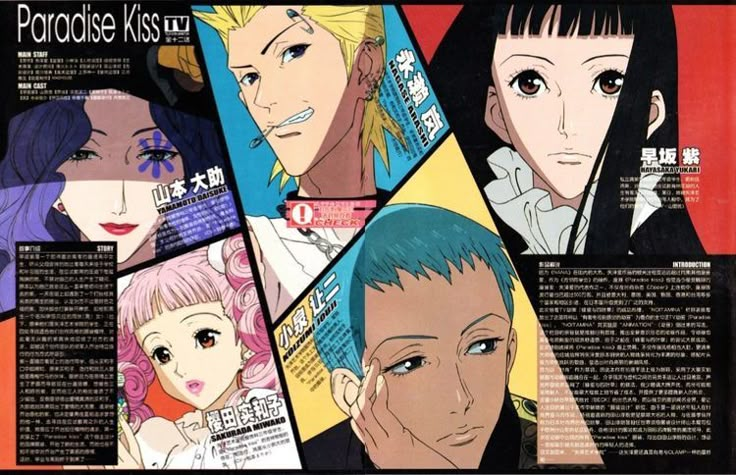

Paradise kiss: uma história sobre moda, romance e amadurecimento
꒰ঌ ໒꒱

Yukari Hayasaka é extremamente ansiosa e sofre com a pressão do vestibular. Sua rotina gira em torno dos estudos, e seu principal objetivo é se formar, ingressar na faculdade e conseguir um bom emprego. Certo dia, a caminho do cursinho, ela se depara com duas pessoas de aparência incomum. Isabella, uma mulher alta e excêntrica, e Arashi, um homem com piercings e alfinetes no rosto, estão em busca de alguém que aceite desfilar com uma peça da Paradise Kiss, sua marca de roupas. Ao perceberem que Yukari tem a altura e a fisionomia perfeitas para transmitir a imagem que desejam no desfile, tentam chamar sua atenção e correm atrás dela. Assustada com a abordagem “invasiva”, Yukari classifica a ação como uma tentativa de roubo e até mesmo de uma possível violação sexual, julgando Isabella e Arashi com base em sua aparência.